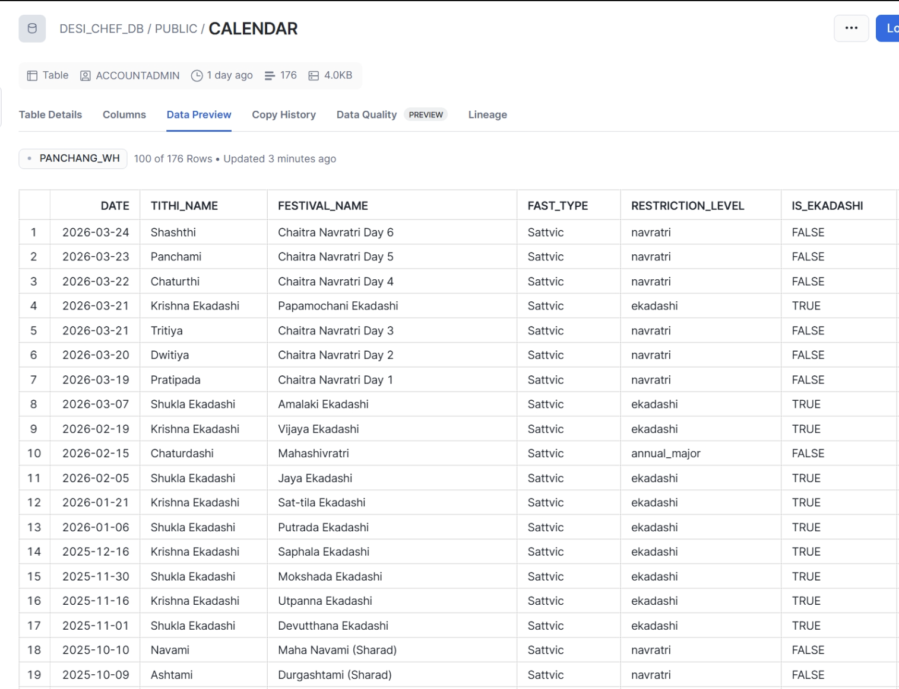
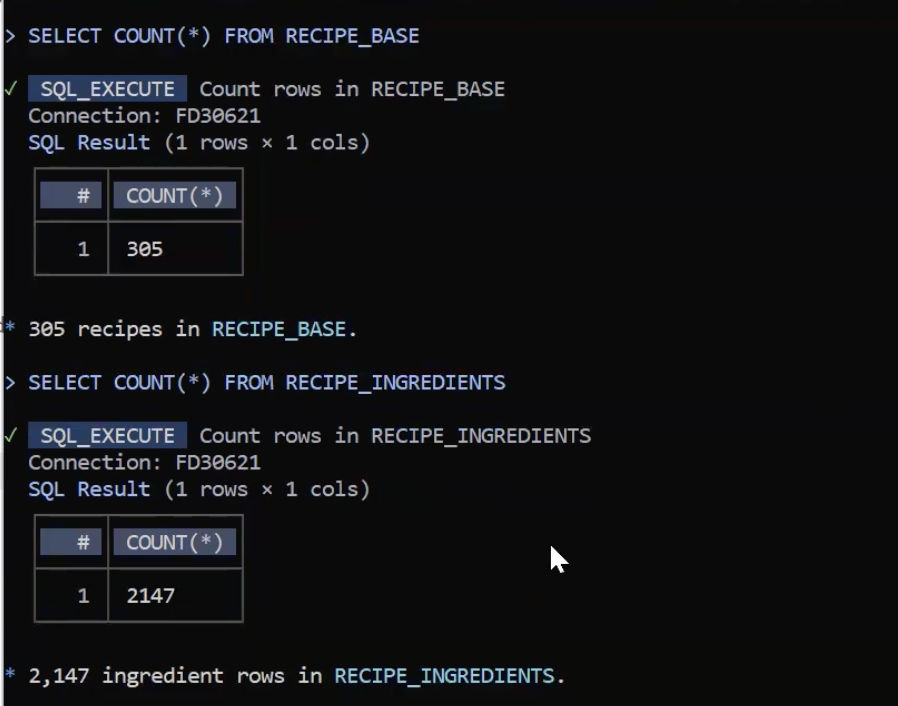
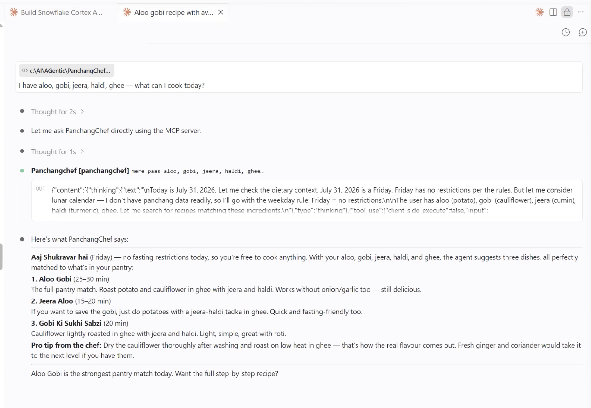
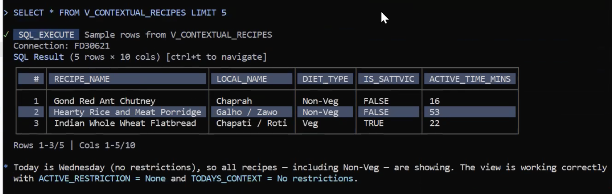
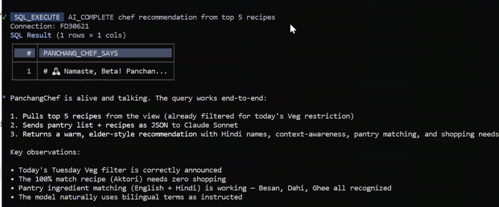
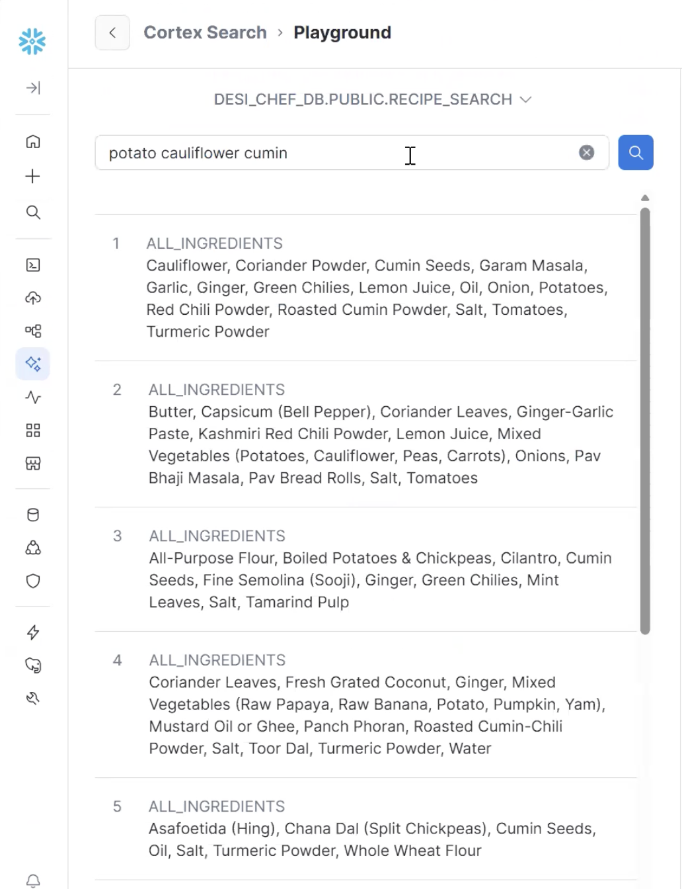

What It Does
Six things happen automatically, in the right order, every time you ask a question.
You ask in plain English or Hindi. PanchangChef handles the calendar, the dietary rules, and the pantry matching before it says a word.
Six Snowflake objects, each calling the next. The interesting part is how DAYOFWEEK() and a 176-row calendar table do the work of what most apps build into application logic.
This is a live view → materialized table → vector index → agent pipeline, fully SQL-native. No orchestration framework, no containers.
Calendar check
DAYOFWEEK() + CALENDAR table detects today's fast — Ekadashi, Navratri, or weekly (Mon/Tue/Thu/Sat).
Dietary filter
Sattvic removes onion/garlic/non-veg. Veg removes non-veg only. Unrestricted shows all 305.
Pantry match
MY_PANTRY (30 bilingual items) scored against each recipe's LISTAGG'd ingredients. 100% = cook now.
Semantic search
Cortex Search (arctic-embed-m-v1.5) handles "aloo" ≈ "potato" without an explicit synonym map.
Warm response
AI_COMPLETE wraps results in bilingual Hindi-English with the "Namaste, Beta!" format and what to buy.
MCP endpoint
DESI_CHEF_MCP exposes everything to Claude Desktop or Cursor via OAuth. One natural language query.
The Data
Four tables. Two are from a public GitHub dataset — no Kaggle login needed.
Think of CALENDAR as the almanac and MY_PANTRY as your fridge list. You edit the pantry CSV to match your kitchen — everything else runs on its own.
This is relational data — not flat CSVs. RECIPE_BASE + RECIPE_INGREDIENTS joined via RECIPE_ID forces you to learn GROUP BY + LISTAGG, the core SQL pattern this whole project depends on.
The 3-table recipe schema forces a LISTAGG aggregation. That aggregated string is simultaneously the Sattvic-detection surface (LIKE '%onion%') and the Cortex Search payload — two problems solved by one GROUP BY.
| Table | Rows | Source | Key Columns |
|---|---|---|---|
RECIPE_BASE | 305 | GitHub: War004/food-eaten-in-india | RECIPE_ID, name (EN + local), IS_NON_VEG, cook time |
RECIPE_INGREDIENTS | 2,147 | Same | RECIPE_ID, NAME, AMOUNT, UNIT |
CALENDAR | 176 | Custom CSV | DATE, festival_name, fast_type, restriction_level |
MY_PANTRY | 30 | Edit to match your kitchen | INGREDIENT_NAME, HINDI_NAME, category |

Architecture
Six layers. Every one stays inside Snowflake.
Your question flows in from Claude Desktop. The answer comes back with the fast context already applied. You never touch SQL.
V_CONTEXTUAL_RECIPES is a live view — recalculates on every query. RECIPE_SEARCH_BASE is the only snapshot (needs a daily Task to stay current).
Two read paths: semantic retrieval (RECIPE_SEARCH → RECIPE_SEARCH_BASE snapshot) and real-time context (V_CONTEXTUAL_RECIPES live join). The agent uses both on each query.
The Build
CoCo (Cortex Code) writes the SQL from English prompts. Six steps, blank account to live MCP server.
You won't run these steps yourself — but this is how the agent was built. Skip ahead to Live Results to see what it produces.
Every CoCo prompt is pre-written in docs/STEP_BY_STEP_GUIDE.md. The gotcha callouts below show exactly where I hit walls and how CoCo recovered.
Steps 5 and 6 are where Cortex's architecture constraints surface. The CTE→materialized table pattern and the Agent DDL quoting issue are the two things you need to know before starting.
Step 0 — AGENTS.md + CoCo CLI
Includes account ID, warehouse, bilingual ingredient map (aloo=potato, jeera=cumin…), and dietary constraint rules. Under 200 lines for best compliance. Launch with cortex from project root.
Step 1 — Load Data
Upload 4 CSVs via Snowsight → Data → Add Data → Load Into Stage. Then COPY INTO RECIPE_BASE (305), RECIPE_INGREDIENTS (2,147), CALENDAR (176), MY_PANTRY (30).
CoCo assumed .gz (compressed). Files were plain CSV. Fix: run LIST @STAGE first — see actual filenames — then re-run COPY INTO without the suffix.
RECIPE_BASE PARTIALLY_LOADED (306 parsed, 305 loaded, 1 skipped = empty trailing newline). Normal — not a data error. The FIELD_OPTIONALLY_ENCLOSED_BY = '"' file format is essential for commas inside ingredient unit strings.

Step 3 — V_CONTEXTUAL_RECIPES
Three CTEs: (1) join recipes + ingredients via LISTAGG → all_ingredients string, (2) check CALENDAR + DAYOFWEEK() → dietary filter, (3) count pantry matches per recipe. Result: ranked list always reflecting today.
First attempt scored 125%. Bug: LIKE '%wheat%' matched two pantry items ("Whole Wheat Flour" + "Buckwheat Flour") against one recipe ingredient. Fix: count distinct recipe ingredients matched (not pantry item hits). CoCo iterated three times to nail the logic.
LOWER(all_ingredients) NOT LIKE '%onion%' AND NOT LIKE '%garlic%' AND NOT LIKE '%shallot%' on the LISTAGG string. Weekly fasts: CASE WHEN DAYOFWEEK(CURRENT_DATE()) IN (2,3,5,7) THEN 'Veg' END. Replaces 208+ stored calendar rows per year.
Step 4 — AI_COMPLETE
AI_COMPLETE('claude-sonnet-4-6', CONCAT(...)) sends top-5 recipes inline. Model announces fasting context, gives Hindi + English names, notes what to buy. Stays inside Snowflake.
Step 5 — Cortex Search + Agent
Create RECIPE_SEARCH_BASE (materialized table), enable CHANGE_TRACKING, create RECIPE_SEARCH Cortex Search on it. Then create DESI_CHEF_AGENT with recipe_search + data_to_chart tools.
Pointing Cortex Search at V_CONTEXTUAL_RECIPES directly fails: "Change tracking is not supported on queries with VALUES." Root cause: CTEs block change tracking. Fix: CREATE TABLE RECIPE_SEARCH_BASE AS SELECT * FROM V_CONTEXTUAL_RECIPES → ALTER TABLE ... SET CHANGE_TRACKING = TRUE → point Search at the table. Not in official docs — you find it by hitting the wall.
Use $$ (double dollar) for the YAML spec block. $spec causes a parse error. The error message doesn't tell you this.
RECIPE_SEARCH_BASE is a point-in-time snapshot. Search results reflect the dietary context at the time of the last materialization. Use a Snowflake Task to refresh at midnight. Without it, search is frozen at the last manual refresh — the view stays current but the search index doesn't.
Step 6 — MCP Server
Create DESI_CHEF_MCP (MCP Server object) + DESI_CHEF_MCP_OAUTH (Security Integration). Create a dedicated non-admin user + role for OAuth. Wire up .mcp.json with mcp-remote@latest. PanchangChef appears as a tool in Claude Code.
This step had the most gotchas of the entire build. The SQL is two lines. The connection is where it gets interesting.
Snowflake blocks ACCOUNTADMIN, ORGADMIN, and SECURITYADMIN for all custom OAuth integrations — hardcoded, cannot be unblocked. Fix: create a dedicated non-admin role and user. Run as ACCOUNTADMIN:
CREATE ROLE IF NOT EXISTS DESI_CHEF_ROLE; GRANT USAGE ON WAREHOUSE PANCHANG_WH TO ROLE DESI_CHEF_ROLE; GRANT USAGE ON DATABASE DESI_CHEF_DB TO ROLE DESI_CHEF_ROLE; GRANT USAGE ON SCHEMA DESI_CHEF_DB.PUBLIC TO ROLE DESI_CHEF_ROLE; GRANT SELECT ON ALL TABLES IN SCHEMA DESI_CHEF_DB.PUBLIC TO ROLE DESI_CHEF_ROLE; GRANT SELECT ON ALL VIEWS IN SCHEMA DESI_CHEF_DB.PUBLIC TO ROLE DESI_CHEF_ROLE; GRANT USAGE ON CORTEX SEARCH SERVICE DESI_CHEF_DB.PUBLIC.RECIPE_SEARCH TO ROLE DESI_CHEF_ROLE; GRANT DATABASE ROLE SNOWFLAKE.CORTEX_USER TO ROLE DESI_CHEF_ROLE; CREATE USER DESI_CHEF_USER PASSWORD = 'StrongPassword!' DEFAULT_ROLE = DESI_CHEF_ROLE DEFAULT_WAREHOUSE = PANCHANG_WH MUST_CHANGE_PASSWORD = FALSE; GRANT ROLE DESI_CHEF_ROLE TO USER DESI_CHEF_USER;
CoCo suggests /api/v2/cortex/mcp/DB.SCHEMA.SERVER — returns 404. The actual working path is /api/v2/databases/{DB}/schemas/{SCHEMA}/mcp-servers/{SERVER}. Unauthenticated requests return 404 (not 401), so it looks like a wrong URL when it's actually an auth issue.
mcpServers in .claude/settings.json is rejected with a schema error. MCP servers go in .mcp.json at the project root. Add "enableAllProjectMcpServers": true to settings.json to auto-approve without prompting.
client-info.json and data/output files contain these credentials — both are in .gitignore. Never commit them.mcp-remote handles the browser OAuth flow locally, caches the token, and proxies MCP protocol to Snowflake. Specify port 15734 and pass OAuth URLs as arguments alongside a --static-oauth-client-info JSON file.
Live Results
July 29, 2026 — a Tuesday. DAYOFWEEK() returned 3, Vegetarian filter triggered, 107 Non-Veg recipes removed automatically.
It's Tuesday. The agent already knew. You just asked what to cook — it handled the rest.
No code change to apply the filter. The view recalculated with CURRENT_DATE() and DAYOFWEEK checked the day. This is the payoff of the date-logic-in-SQL approach.
107 rows filtered at the view layer before any scoring or LLM call. The filter predicate runs on Snowflake's query engine — not in application code, not in the agent's system prompt.


7 Things I Learned
The things that weren't in the docs — discovered by building.
The big one: the agent figured out it was Tuesday by itself. No one told it. That's DAYOFWEEK() in the SQL doing the work.
Items 1, 4, 6, and 7 are the ones that would have blocked me without this list. Save them before you start.
Item 1 is the critical architecture constraint. Items 3 and 5 are Cortex-specific patterns that differ from standard SQL/ML tool conventions.
Cortex Search needs a table, not a view
CTE-based views can't have change tracking. Materialize to *_BASE table first, enable tracking, then point Search at the table.
LISTAGG solves two problems at once
Aggregates per-recipe ingredient rows into one string. Same string detects non-Sattvic (LIKE) AND serves as the Cortex Search payload.
DAYOFWEEK() beats 208 stored calendar rows
Compute weekly fasts live via DAYOFWEEK(CURRENT_DATE()). Only store the 176 irregular festival dates. View stays current with zero annual refresh.
AI_COMPLETE ≠ CORTEX.COMPLETE
AI_COMPLETE is current. CORTEX.COMPLETE is deprecated (EOL 2026). Different signatures. Don't copy 2024-era tutorials.
AGENTS.md is CoCo's long-term memory
Keep under 200 lines. Include account, warehouse, constraints, bilingual maps. CoCo reads it every session and stops asking the same setup questions.
orchestration: auto beats pinning a model
Snowflake picks the best model and upgrades automatically when new ones ship. No spec update required.
$$ not $spec in Agent DDL
Snowflake Agent DDL uses $$ for the YAML spec block. $spec is a parse error. The error message won't tell you why.
Cortex vs. the broader stack
| PanchangChef Layer | Snowflake Object | Industry Equivalent |
|---|---|---|
| Relational joins | RECIPE_BASE + INGREDIENTS | OLTP normalized schema |
| Flattened view | V_CONTEXTUAL_RECIPES | Star schema fact view / dbt model |
| Materialized snapshot | RECIPE_SEARCH_BASE | Materialized view / pre-computed table |
| Vector search index | RECIPE_SEARCH | Elasticsearch / Pinecone / pgvector |
| Agent with tools | DESI_CHEF_AGENT | LangChain / LangGraph agent |
| API endpoint | DESI_CHEF_MCP | REST API / OpenAI-compatible endpoint |

Get Started
Three steps. Free account, free tier CLI, one clone.
You'll need a free Snowflake account and to edit one CSV with your pantry items. That's the only configuration.
After Step 3, follow docs/STEP_BY_STEP_GUIDE.md — every CoCo prompt is pre-written. Paste → run → move to the next step.
The checkpoints in checkpoints/CHECKPOINTS.sql let you skip CoCo entirely and run raw DDL in Snowsight if you prefer to own the SQL directly.
Free Snowflake Account
AWS · US East Ohio · AI Data Cloud. No credit card. $400 credits, 30 days.
signup.snowflake.com
→ AI Data Cloud for Enterprise
→ Get your account identifier
Install CoCo CLI
Snowflake's AI coding agent. Writes SQL from English prompts.
# Windows PowerShell
irm https://ai.snowflake.com/
static/cc-scripts/install.ps1 | iex
# macOS / Linux
curl -LsS https://ai.snowflake.com/
static/cc-scripts/install.sh | sh
Clone + Launch
Edit data/my_pantry_sample.csv to match your kitchen. Then run.
git clone github.com/
your-username/PanchangChef
cd PanchangChef
cortex
# CoCo reads AGENTS.md
# Follow STEP_BY_STEP_GUIDE.md
checkpoints/CHECKPOINTS.sql — paste any checkpoint directly into a Snowsight SQL Worksheet and run it manually. CoCo is optional.